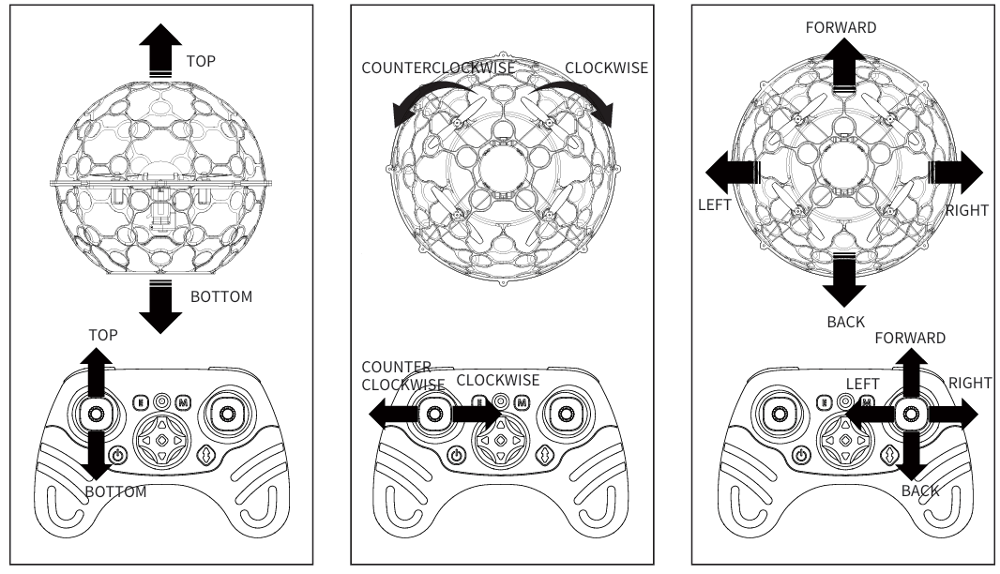
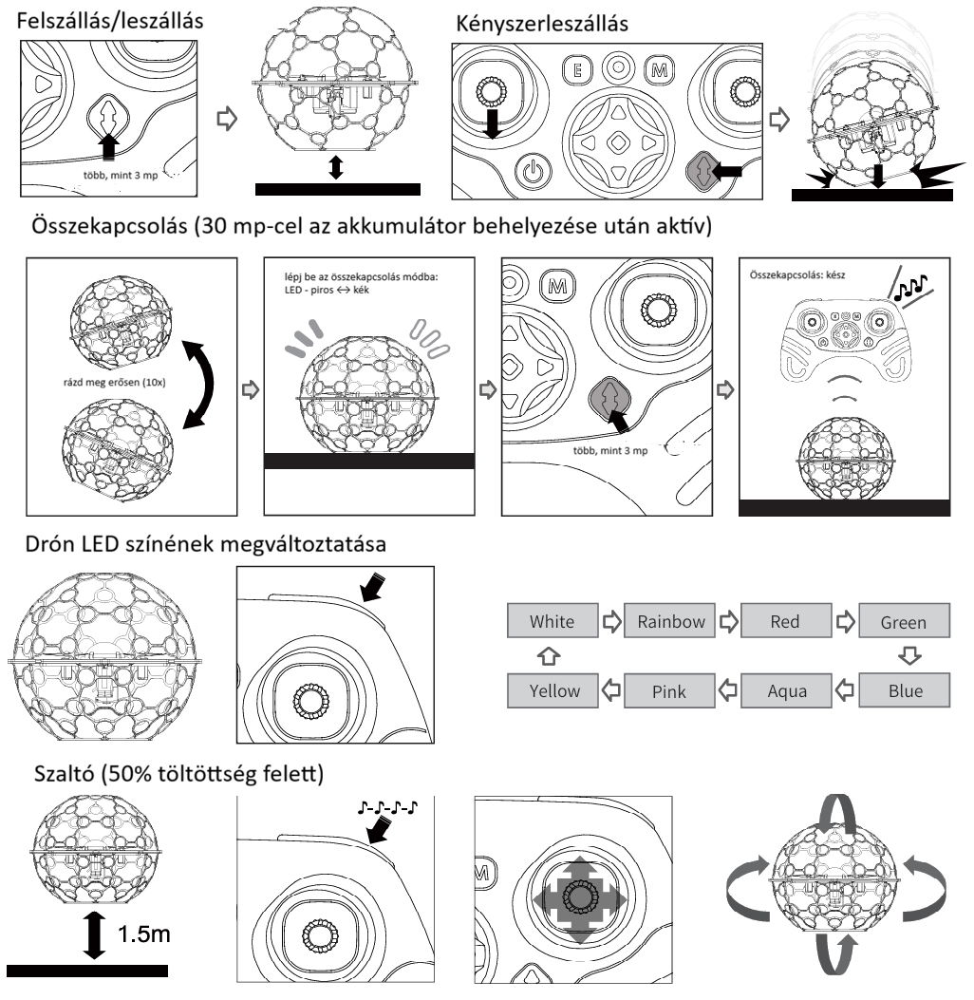
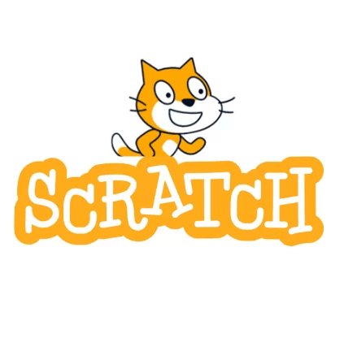
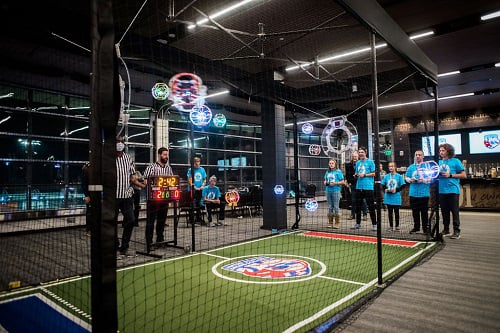

SkyKick EVO je pokročilý, programovateľný dron, ktorý vďaka svojim zabudovaným senzorom a možnosti riadenia založeného na jazyku Python tvorí most medzi efektnými letovými manévrami a svetom komplexného robotického programovania. Jednou z najzaujímavejších oblastí využitia SkyKick EVO je dronový futbal, ktorý spája inovatívnu technológiu s uzatvoreným vzrušením tímových športov.

Pomocou diaľkového ovládača môžete dron riadiť, alebo ho po pripojení k počítaču použiť na kódovanie.




Ďalšie informácie o lietaní s dronom a jeho používaní nájdete na nasledujúcom odkaze:
SkyKick EVO - User Guide

Programovanie SkyKick EVO založené na Scratchi vám umožňuje vytvárať vlastné algoritmy jednoduchým spájaním farebných kódových blokov, vďaka čomu si hravou formou osvojíte základy taktických manévrov potrebných pre dronový futbal.
Online programovanie
Na stiahnutie: z webovej stránky
Dronový futbal je vzrušujúci, high-tech tímový šport, ktorý spája dynamiku e-športov s taktickými prvkami tradičného futbalu, pričom využíva drony vybavené špeciálnym ochranným rámom, podobne ako SkyKick EVO.

Úlohou obrancov je fyzickými nárazmi alebo blokovaním cesty zabrániť súperovmu útočníkovi skórovať.
Programovateľné LED svetlá dronov pomáhajú rýchlo identifikovať spoluhráčov a súperov vo vzduchu.
V prípade dronov SkyKick EVO umožňuje programovanie v jazyku Python alebo Scratch vyvinúť jedinečné letové profily a stabilnejšie ovládanie pre preteky.

Free AI Website Maker